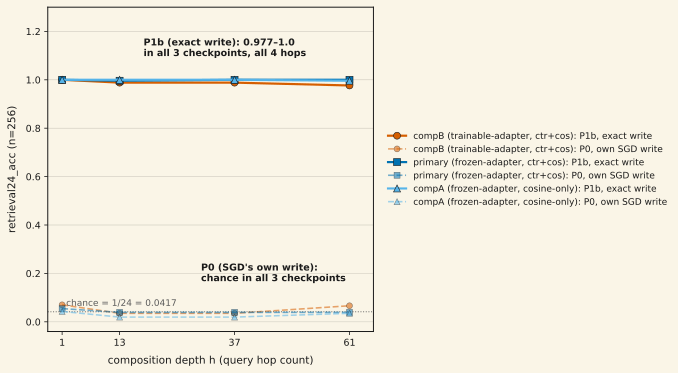

A 98M-parameter, 12-layer DeltaNet language model carries a Native Composition Reads (NCR) fast-weight head: a relation operator Z is written in context and read h hops later via O(log h) binary exponentiation — finding no. 14's mechanism — against a K=24-entity, d=25 state. A prior diagnostic closed the read side: even in the checkpoint with the healthiest target-space geometry, the read output collapsed directionally with depth (o_pairwise_cos 0.80 at h=1 rising to 0.989–0.992 by h≥3) and 24-way retrieval stayed at chance throughout, diagnosed as power iteration toward the written operator's own dominant singular direction. This note asks whether that block is a read-path problem or a write-quality problem, by substituting an exact, teacher-forced operator into the same trained checkpoint's read path. On the trained compB checkpoint (20,000 steps, n=256, seed 90210): the model's own SGD-learned write reads retrieval24_acc 0.070 / 0.035 / 0.035 / 0.066 at h=1/13/37/61 against a chance baseline of 0.042 — indistinguishable from chance at every depth. Substituting the exact operator into the identical read path reads 1.0 / 0.988 / 0.988 / 0.977 at the same four hops — same weights, same repeated-squaring read, only the operator differs. A fresh-init sanity gate confirms the exact-write algebra and instrument are sound through h=61 before either result is trusted (1.0/1.0/1.0/0.996). Spectral diagnosis of the SGD-written operators (n=256) finds them catastrophically ill-conditioned — condition number median 745 (mean 2,756, heavy right tail to 1.16×10⁵) — and rank-collapsed to an effective rank of 10.5 of a possible 24 (range 5.7–11.9, never above half the state's dimensionality). Two further checkpoints, trained under different configurations (frozen vs. trainable entity adapter; contrastive+cosine vs. cosine-only auxiliary loss), land on the identical result: compA reads P0 = 0.043/0.020/0.020/0.035, P1b = 1.0/1.0/1.0/0.996; primary reads P0 = 0.055/0.039/0.039/0.039, P1b = 1.0/0.996/1.0/1.0. The read machinery already works. SGD never learns the write. Total diagnostic spend ≈0.15 GPU-h, eval-only, no new training. Scope, stated plainly: a synthetic entity-binding task grafted into the LM, one base training seed per configuration, and a capability demonstrated through the model's own read machinery given an exact in-context-written operator — not a demonstration that SGD can produce that operator. Making SGD learn the write is the open problem this note surfaces, not one it solves.
01What the read side already closed, and the question this note asks
Native Composition Reads writes a relation operator Z in context and reads its h-fold composition exactly at query time via binary exponentiation — O(log h) sequential cost, against O(h) baselines that must apply their step h times (finding no. 14). Grafting that mechanism into a real 98M-parameter, 12-layer DeltaNet backbone (K=24 relational entities, tight-spare state d=25) is the flagship program's active spearhead. A prior harvest of three trained checkpoints (NCR_REAL_LM_DESIGN.md §G3-B32) closed the obvious read-side hypothesis: even the checkpoint with the healthiest target-space integrity still failed. Stated in one sentence, §G3-B32 found that the read output o collapsed directionally with composition depth (o_pairwise_cos 0.80 at h=1 rising to 0.989–0.992 by h≥3) while 24-way retrieval stayed at chance throughout — diagnosed as the repeated-squaring read undergoing power iteration toward the trained operator's own dominant singular direction, a write-side conditioning problem, not a read-side one.
That diagnosis makes a specific, testable prediction: if the read path itself is sound and the trained operator's poor conditioning is what erases discriminability, then feeding the same trained checkpoint's read path an exactly-conditioned operator — computed directly from the in-context entities, never learned — should recover clean composition through h=61. This note is that test: three arms per checkpoint. P0 reads with the model's own SGD-learned write. P1a is a fresh-init sanity gate — the exact-write algebra and instrument, checked before touching a trained checkpoint. P1b substitutes the exact, teacher-forced operator into the trained checkpoint's own read path, holding every weight fixed.
02The decisive pair: same weights, same read, only the operator differs
On the fresh-init sanity gate (P1a, n=256), the exact-write algebra and instrument read cleanly through 61 hops — retrieval24_acc 1.0 / 1.0 / 1.0 / 0.996 at h=1/13/37/61, mean cosine 1.0 → 0.997, output collapse metric o_pairwise_cos ≈ 0.01 (no collapse at all). This clears before any trained-checkpoint number is trusted: whatever the trained checkpoints show below is not an artifact of the exact-write machinery itself.
| arm (compB, step 20,000, n=256) | h=1 | h=13 | h=37 | h=61 | o_pairwise_cos range |
|---|---|---|---|---|---|
| P0 — model's own SGD write | 0.0703 | 0.0352 | 0.0352 | 0.0664 | 0.77–0.99 |
| P1b — exact write substituted | 1.0000 | 0.9883 | 0.9883 | 0.9766 | 0.19–0.23 |
| chance | 0.0417 | 0.0417 | 0.0417 | 0.0417 | — |

The pre-registered scoring reduces each arm to two yes/no reads at a fixed threshold τ=0.09162: does it clear the retrieval bar at h=1, and does it still clear it at h=61? For P0 (labeled AC), compB reads a=0, c=0 — fails at both ends, the ARCHIVE-CONFIRMED cell: the SGD write shows no signal at any depth, reproducing the read-collapse diagnosis at n=256 on a disjoint eval seed. For P1b (labeled BD), compB reads b=1, d=1 — clears at both ends, EXACT-Z-SURVIVES-DEPTH: the same trained model's read path — repeated squaring plus the retrieval readout — executes 61-hop composition given the exact operator. Spectral diagnostics on the SGD-written operator that produced the P0 row (below) show why: it is not that the read machinery degraded, it is that the operator it was asked to compose was never well-formed to begin with.
03Spectral diagnosis: the write is catastrophically ill-conditioned
256 SGD-written operators — one per evaluation context, same compB checkpoint — were decomposed and scored for condition number and effective rank (restricted to the K=24 entity-carrying subspace of the d=25 state). The picture is not "somewhat degraded." It is uniformly, severely broken:
| metric (n=256 written operators) | mean | median | min | max |
|---|---|---|---|---|
| condition number | 2,756 | 745 | 63 | 115,966 |
| effective rank (of 24) | 10.55 | 10.74 | 5.73 | 11.92 |
Two readings survive together. The condition number is wildly heavy-tailed — a heavily skewed distribution from 63 up to 1.16×10⁵ — so no single number characterizes "the" operator's conditioning; the population is uniformly bad, with a long tail into catastrophic. The effective rank, by contrast, is tight and damning: every one of the 256 written operators sits between 5.7 and 11.9 of a possible 24, never once reaching even half the state's dimensionality. A K=24 relation task needs an operator with genuine rank across all 24 entities to keep them discriminable under repeated squaring; SGD is consistently finding a solution that uses less than half the available space, and the read machinery — proven sound by both the fresh-init gate and the exact-write substitution above — has no way to recover discriminability from an operator that was never given it.
04Replicated 3/3: three training configurations, one result
The compB result alone is one checkpoint. The identical instrument (eval_arm_at_hops, same seed and signature as the fresh-init gate) was re-run the same day on two sibling checkpoints, trained under genuinely different configurations — not just different seeds of the same recipe:
| checkpoint | training config | P0 (h=1/13/37/61) | P1b (h=1/13/37/61) | cell |
|---|---|---|---|---|
| compB | trainable entity adapter, contrastive+cosine aux loss | 0.070 / 0.035 / 0.035 / 0.066 | 1.0 / 0.988 / 0.988 / 0.977 | AC=00, BD=11 |
| primary | frozen entity adapter, contrastive+cosine aux loss | 0.055 / 0.039 / 0.039 / 0.039 | 1.0 / 0.996 / 1.0 / 1.0 | AC=00, BD=11 |
| compA | frozen entity adapter, cosine-only aux loss | 0.043 / 0.020 / 0.020 / 0.035 | 1.0 / 1.0 / 1.0 / 0.996 | AC=00, BD=11 |
All three land in the identical grid cell. The two axes varied between checkpoints — whether the entity adapter is frozen at initialization or trained alongside the backbone, and whether the auxiliary loss includes a contrastive term or only a cosine term — change nothing about the outcome: every checkpoint's own write reads at chance at every depth, and every checkpoint's read path composes the exact operator correctly through h=61. This is what upgrades the finding from "one checkpoint's diagnostic" to a verdict of record: the read-path capability is universal across the tested training configurations, and the learned write is the sole blocker in every one.
05What this establishes, and the open problem it leaves
Establishes: a trained, 98M-parameter language model's fast-weight read path already contains a fully functional 61-hop compositional-retrieval circuit. This is not a toy demonstration on an isolated module — it is the same repeated-squaring read, the same 12-layer DeltaNet backbone, the same trained weights that fail on their own write, executing exact composition when the operator is supplied correctly. The blocker is squarely on the write side: SGD is not finding an operator with the rank and conditioning the read path needs, across three different training configurations and one base seed each.
Does not establish: that SGD can be made to learn a usable write, or how. The exact operator used in P1a and P1b is computed directly from the in-context entities by the runner's own teacher_force_operator function — it is not produced by any learned component. That function is also the natural next lever: it already computes the exact target Z_ideal the write head would need to produce, which is a direct, cheap, always-available supervision signal for training the write against — but that is a new claim about a new intervention, not something this diagnostic ran or is entitled to claim. Per this program's own novelty-re-verification gate, a supervised-write-learning design re-enters the full checking process before any GPU time is spent on it.
06Limitations — read before citing
- A synthetic task grafted into a real LM, not a naturally occurring language capability. The entity-binding and composition task is constructed specifically to exercise the NCR head; nothing here claims the backbone uses this circuit for anything in ordinary language modeling.
- One base training seed per configuration. Three checkpoints replicate the result across three different configurations (adapter freezing, auxiliary loss composition) — a meaningfully stronger replication than three seeds of the same recipe — but each configuration is still a single trained run, not a seed-varied ensemble.
- The capability demonstrated is retrieval through the model's own read machinery given an exact, externally supplied operator. It is not a demonstration that the model — or SGD — can produce that operator itself. That gap is the finding's own headline, not a caveat bolted on after the fact.
- P1b's decode head reads garbage on the free-form answer-accuracy metric (0.02–0.06 across all cells) even where retrieval24_acc reads 0.977–1.0 — pre-registered as expected: the decode head was trained against the distribution the model's own collapsed write produces, not against exact-write outputs. retrieval24_acc, not answer accuracy, is the instrument this finding's claims are built on.
- Condition number is not summarized by a single figure. The distribution across the 256 written operators is heavily right-skewed (median 745, mean pulled up to 2,756 by a tail reaching 1.16×10⁵); report the full distribution, not one point estimate, when citing this number.
- Eval-only diagnostic. No new model was trained for this note; all three checkpoints existed already from a prior contrastive-aux grid. Total realized spend across the fresh-init gate, the decisive pair, the spectral pass, and both replication cells is ≈0.15 GPU-h.
07Reproducibility
Raw JSONs: experiment-runs/2026-08-13_ncr_writecond_premise_battery/ — writecond_premise_P1a.json (fresh-init gate), writecond_premise_P0P1b.json and writecond_premise_SUPP.json (compB decisive pair, spectral diagnostics, and the h=61 supplement), writecond_premise_REPL_compA.json / writecond_premise_REPL_primary.json (the two replication checkpoints). All figures and every number on this page are read directly from these files (n=256, seed 90210 throughout) and cross-checked in-script against the harvest's own recorded table before use — see assets/plots/generate_ncr_writecond_premise.py. Design and verdict record: matrix-thinking/NCR_WRITE_CONDITIONING_DESIGN.md, "PREMISE BATTERY HARVEST" section (compB) and its same-day "REPLICATION" addendum (compA, primary); the read-side diagnosis this note responds to is matrix-thinking/NCR_REAL_LM_DESIGN.md §G3-B32.
References
- Schlag, I., Munkhdalai, T., & Schmidhuber, J. (2021). Learning Associative Inference Using Fast Weight Memory. ICLR 2021, arXiv:2011.07831 — the closest prior art for in-context fast-weight relational composition, the baseline family this program builds against.
- Nguyen, T., Vo, H., Vo, T., Nguyen, T., & Pham, T. (2026). MuonSSM: Orthogonalizing State Space Models for Sequence Modeling. arXiv:2606.30461, ICML 2026 Oral — the closest prior art for conditioning a fast-weight write specifically (not the recurrent transition matrix or the optimizer update); the natural next lever this note's open problem points toward.
- See also finding no. 14, "O(log h) reads: 20.9× faster at depth 1,021 — and it composes exactly" — the base architecture and exact-composition mechanism this note runs inside a real, trained language model.